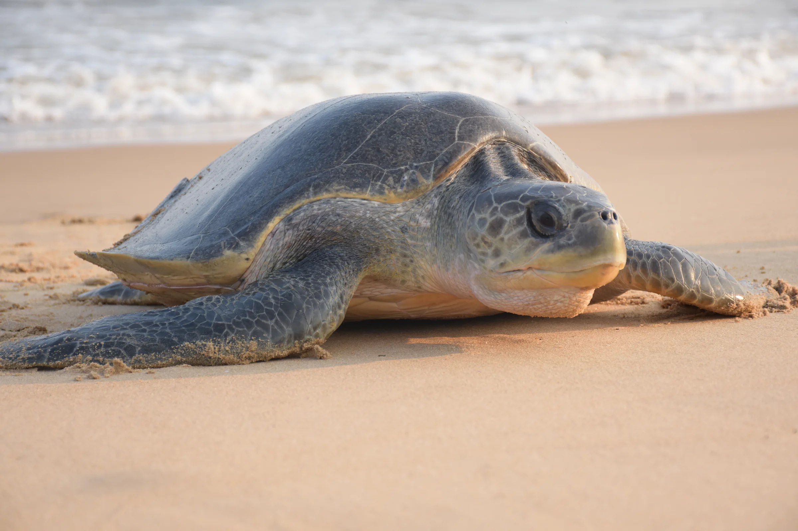
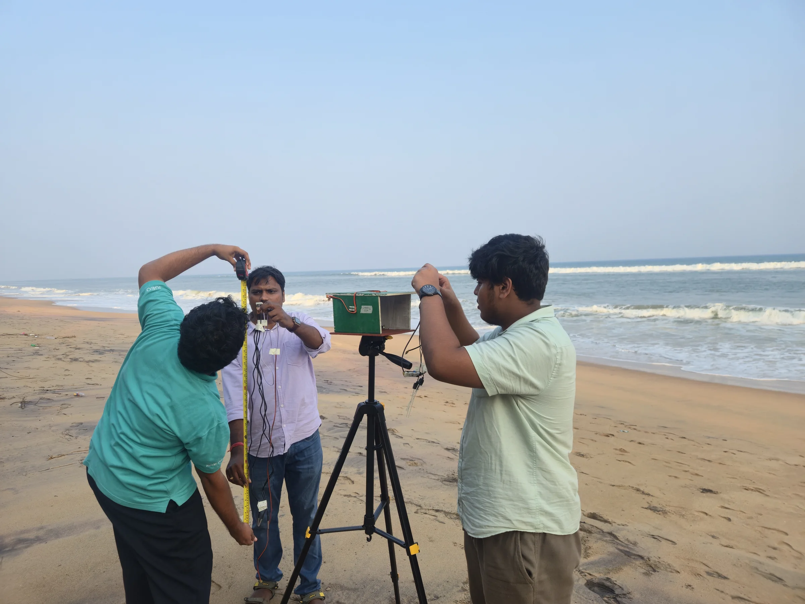
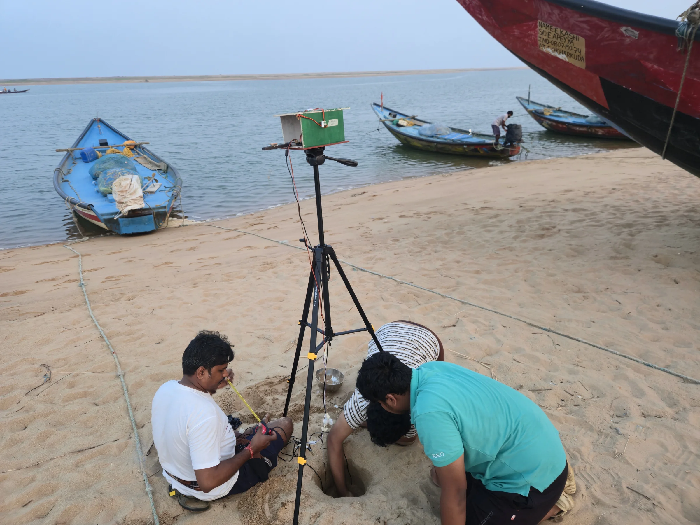

← All projects
Conservation technology · Prototype research · Odisha, India
TurtleGuard
Edge monitoring for olive ridley rookeries.
Project overview · 01
Local, explainable monitoring for human review.
TurtleGuard examines two connected conditions that may affect olive ridley rookeries: artificial light that can disrupt hatchlings’ seaward orientation, and thermal conditions associated with incubation risk.
It is designed to support authorised conservation teams locally and explainably, with people making the final call.
Observed signals · 02
Different measurements, one reviewable picture.
Light near the horizon
Directional horizon brightness, visible-light spectrum, and the position and visibility of light sources near the seaward horizon.
Sand-temperature proxies
Multi-depth temperature proxies interpreted with air, humidity, weather and local site context.
Transparent local analysis
Offline-capable acquisition and explainable risk indicators, including contributing measurements and data-quality status.
Workflow · 03
- 01Acquire
Collect local optical, thermal and weather signals without disturbing turtles or nests.
- 02Quality-gate
Identify weak, missing or unreliable data before interpretation.
- 03Interpret
Generate transparent indicators and show the measurements that contribute to them.
- 04Review
Place the result in the hands of authorised teams and expert judgement.




Research boundary · 04
A monitoring framework, not a biological verdict.
TurtleGuard is a prototype monitoring framework. Its indicators do not replace biological validation, permits or expert judgement, and the published documents should not be treated as evidence of a completed longitudinal field trial.
The thermal score does not directly determine hatchling sex; that inference requires local calibration. Where authorised passive footage is available, reviewed movement trajectories can help evaluate the optical score.
Team and documents · 05
Research team
Suryakanta Lenka
Student Researcher and Co-author
Tripathy Divyajyoti Senapati
Student Researcher and Co-author
Tanmay Kumar Nayak
Project Mentor and ATL Coordinator
Published resources
The paper presents a transparent sensor-fusion and risk-scoring framework and a protocol for future validation. The synopsis provides the shorter research overview.